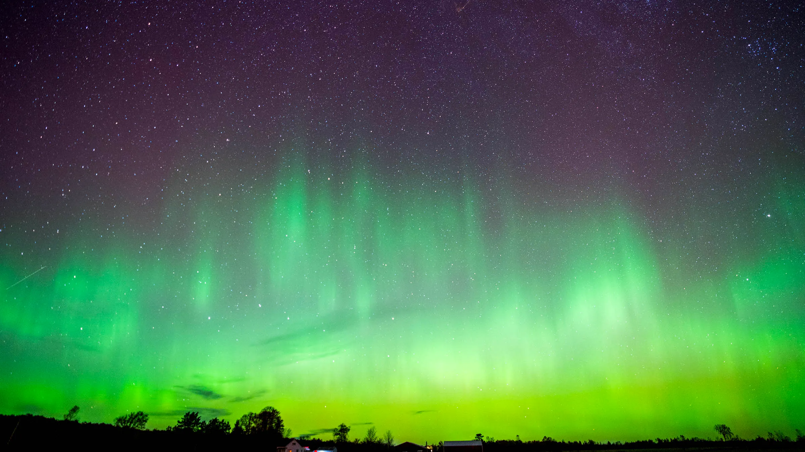

What Are the Northern Lights?
The Northern Lights, or aurora borealis, are a natural light display predominantly seen in high-latitude regions. They occur due to collisions between electrically charged particles from the sun and Earth's atmosphere.
Where Can You See Them?
From Alaska to Norway, learn about the best places to witness the northern lights in all their glory.